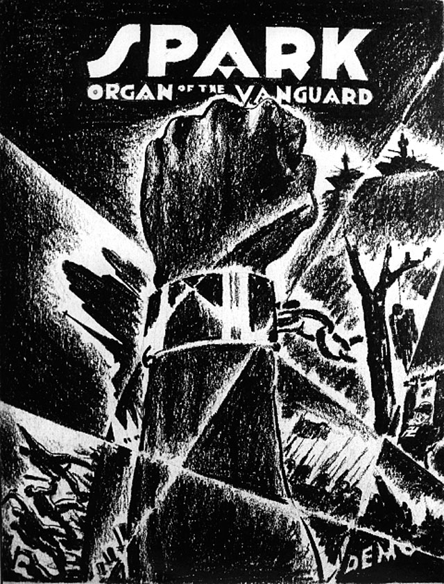

Aaron Douglas
Aaron Douglas was a leading artist of the Harlem Renaissance, also known as the New Negro Movement. Douglas—along with the philosopher Alain Locke, whose important 1925 anthology The New Negro featured Douglas's illustrations—helped set in motion a new visual language detached from traditional European art training and absorbing a distinctive African heritage. His style blended the geometric and angular shapes of Art Deco with the linear rhythm of Art Nouveau; it bore references to African masks and sculptural figures, as well as allusions to African dance.

After graduating with a BFA in fine arts from the University of Nebraska in 1922, Douglas taught art at high schools in Nebraska and Missouri. In 1924, he moved to New York, where he served for two years as an apprentice to the German artist Winold Reiss, whom he met through Charles S. Johnson, then editor of Opportunity.
Through his covers for Opportunity and The Crisis Douglas set forth a new vision for the black artist. His strong, geometric forms and Egyptian profiles resulted in a style later described by cultural critic and educator Richard Powell as “Afro-Cubism.”
In 1926, he loaned his talents to the first and only issue of Wallace Thurman's magazine FIRE!! and later designed the cover of Thurman's short-lived magazine Harlem.
Douglas became the most sought-after book illustrator and cover designer among the black writers of the time. Probably his most controversial cover was for Carl Van Vechten's Nigger Heaven, a book about Harlem nightlife. His illustrations for James Weldon Johnson's epic poem God's Trombone, published in 1927, made him especially popular. Rendered in a painterly style, the plates formed an allegorical study of Negro experience based on the spiritual songs of oppression and daily life.
Douglas frequented nightspots in Harlem to soak up the black urban scene and incorporate these expressions into his works. He is known for superb murals that grace the walls of nightclubs and cultural institutions. Among his best-known work is the series of murals Aspects of Negro Life, created in 1934 for the 135th Street branch of the New York Public Library, now called the Schomburg Center for Research in Black Culture.
In 1938, Douglas moved to Nashville, Tennessee, to chair the art department of Fisk University, a position he held until his retirement in 1966. He passed away in Nashville in 1979.
***
Excerpt adapted from “Souls on Fire,” Print magazine (May/June 1998), with permission from the author.